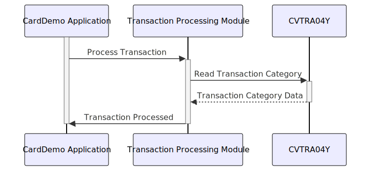

Gerado em: 1 de outubro de 2024
Título do Documento: Especificação da Estrutura de Dados da Categoria de Transação CardDemo
Descrição Resumida:
Este documento descreve a estrutura de dados TRAN-CAT-RECORD usada no aplicativo CardDemo para armazenar informações sobre categorias de transações. Essa estrutura é crucial para classificar as transações com base em seu tipo e subcategoria, permitindo relatórios e análises precisas.
Histórias do Usuário: Como analista de dados, preciso ser capaz de categorizar transações com precisão para que eu possa gerar relatórios significativos e analisar padrões de transações.
Épico Relacionado: 4 - Processamento de Transações
Requisitos Técnicos:
TRAN-CAT-RECORD é definida para representar uma categoria de transação.TRAN-CAT-KEY: Uma chave composta que identifica exclusivamente cada categoria de transação.
TRAN-TYPE-CD: Um código de 2 caracteres representando o tipo geral de transação (por exemplo, ‘PR’ para Compra, ‘PA’ para Pagamento).TRAN-CAT-CD: Um código de 4 dígitos que categoriza ainda mais a transação dentro de seu tipo (por exemplo, ‘0001’ para Compra Online, ‘0002’ para Compra em Loja no tipo ‘PR’).TRAN-CAT-TYPE-DESC: Uma descrição de 50 caracteres da categoria da transação.TRAN-CAT-KEY exclusiva.TRAN-CAT-TYPE-DESC deve ser uma descrição clara e concisa da categoria.Modelos Relacionados:
TRAN-CAT-RECORD:
TRAN-TYPE-CD (String): O tipo geral de transação.TRAN-CAT-CD (String): A subcategoria da transação.TRAN-CAT-TYPE-DESC (String): Uma descrição da categoria da transação.Configurações:
Melhorias de Código:
Melhorias de Segurança:
Diagrama Conceitual:
–Made by “Smart Engineering” (by Compass.UOL)–